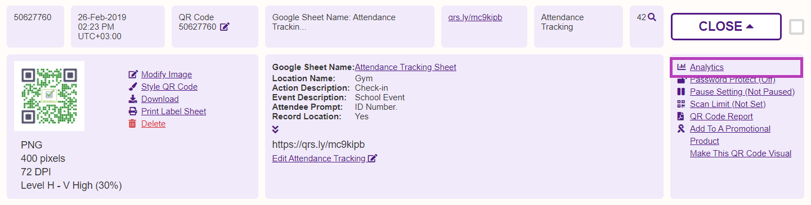
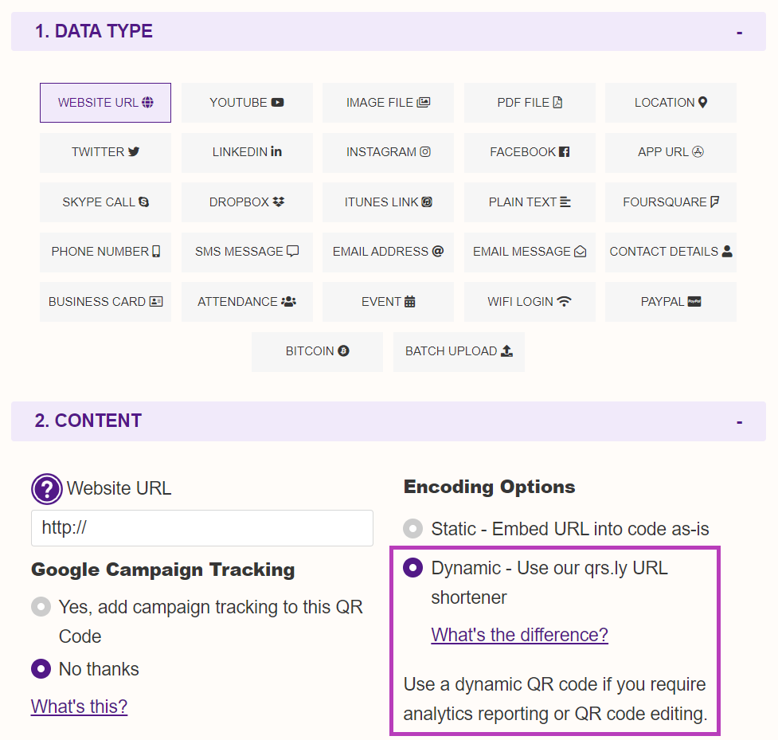
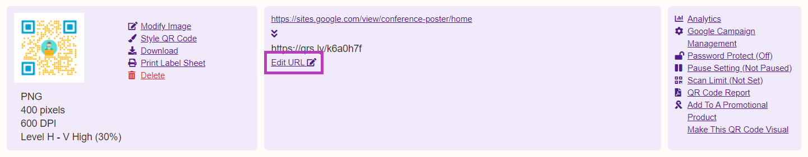
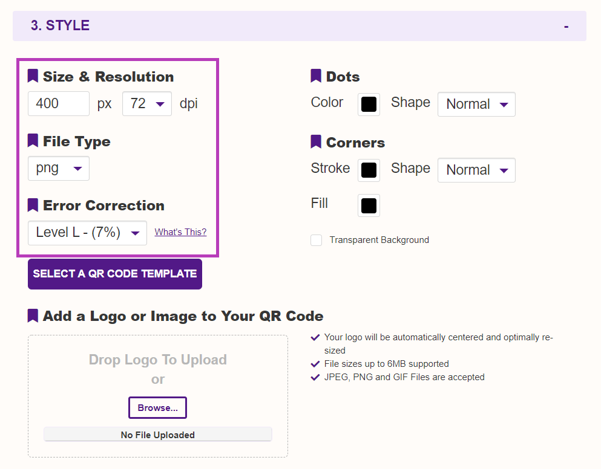
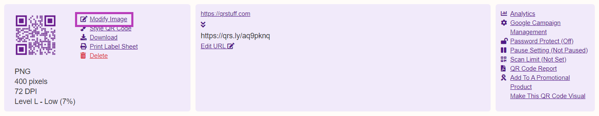
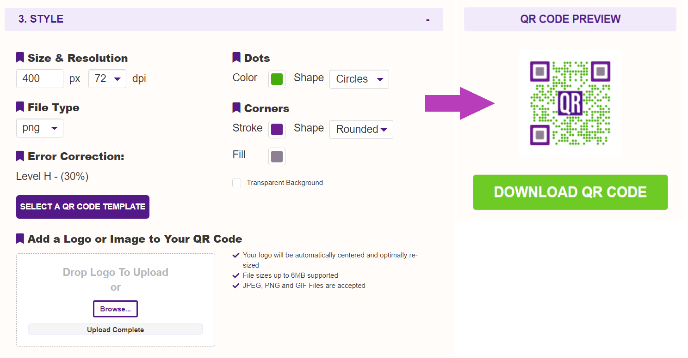

Yes. You can create fully functional QR codes anonymously as a free user with no need to sign up or open an account. No sign-up = no email address harvesting = no spam from us :)
Also, unlike some others, our free QR codes aren't crippleware that stop working 14 days later. Our free QR codes aren't time-limited in any way, don't expire, and are ad-free.
The subscription fee charged relates to providing time-based subscription access to the extended feature set of the website for the period of the subscription purchased.
Opening an account is required for paid subscribers in order to co-ordinate the functionality of your account and to allocate the QR codes you create to your account history (but still no spam!).
No component of the subscription fee relates to purchasing the QR codes themselves.
No. The QR codes (and any underlying short URL's) created by both free users and paid subscribers are permanent and will continue to function indefinitely, however temporary scan limits may apply as outlined below.
Yes. There are no restrictions on commercial use however temporary scan limits may apply as outlined below.
The short answer is Yes, but the reality is that the vast majority of users won't be affected by them. These limits only apply to dynamic QR codes that use our (optional) URL shortener - QR codes that do not use our URL shortener (static QR codes) have no scan limits.
Free Users: While there are no limits on the number QR codes you can create as either a free or paid user, a limit of 50 scans per month is applied to each QR code created by free users. This monthly scan limit presently affects less than 0.001% of the QR codes in our system so it will not impact the overwhelming majority of users. If you anticipate that your QR code will be scanned more than 50 times per month, you should probably consider a paid subscription.
Current Full Paid Subscribers: There are no pre-set scan limits for QR codes associated with current (paid-up) full subscriber account.
Expired Full Paid Subscribers: A 50 scan/month limit is applied to QR codes associated with expired paid subscriber accounts. This scan limit for expired subscribers is a "per QR code" limit and is only applied to the individual QR codes that exceed the monthly 50 scan limit, and does not affect any other QR codes associated with the expired subscriber account. The scan limit is re-set at the start of each calendar month.
At our discretion a temporary Fair Use monthly scan limit may be applied to unusually high scan-volume QR codes (>30,000 scans/month) belonging to current paid subscribers. This Fair Use Policy limit is intended to ensure that the scan activity of a minority of users doesn't adversely impact optimal platform performance for all users.
Don't worry - current subscribers will be contacted well in advance if any of their QR codes are approaching a Fair Use threshhold so that we can work out a solution with them.
Collectively, these measures will only affect about 1 in every 10,000 users - the other 9,999 won't even know that any limits exist :)
And just to reiterate - these limits only apply to dynamic QR codes (the QR codes that use our optional URL shortener). All other QR codes are unlimited.
Expired full subscribers simply need to renew their subscription and the scan limit status of their account will be automatically reset from expired to current.
Free users who upgrade to a full paid account (1 month or longer) can contact us to have the QR codes they created as free user moved to their subscriber account which will remove the 50 scans/month limit from them. This is a complimentary service for up to 10 QR codes. More information here.
Yes. Both our free and paid QR codes are guaranteed 100% ad-free. If you see an ad after scanning one of our QR codes, the QR code scanning app that you're using put it there.
No. The QR code is clearly defined and published as an open ISO standard. Denso Wave owns the patent rights on the QR code creation process, and the methods used to encode and create them, but has chosen not to exercise those rights. The term "QR code" itself is a registered trademark of Denso Wave Incorporated.
Because we are dealing with users from all time zones, our customer support is conducted by email or a phone or Skype call-back to you.
Emails that simply say "there's something wrong with my QR code" or "my QR code won't work" with no futher information or contact details usually end up being ignored since we don't really have much we can get back to you with. Try and include as much information as you can about the QR code, the issues you're having, and the circumstances relating to the issue. Attaching a copy of the QR code image helps us as well.
Subscribers should also mention their account number and the Code ID number of the QR code in question (that's the 7 digit number shown in your account history for that QR code).
Depending on how our day is going, abusive or flamey emails will either be replied to in-kind or will be ignored completely. If you're about to write an email that you probably wouldn't appreciate receiving yourself, take a deep breath and re-think how you'd like things to work out. We're just tech-heads with a "do unto others" policy, so be nice and we'll get on just fine.
Finally, it should go without saying that we only provide support for QR codes created at QRStuff.com but disturbingly, using past emails as a guide, it actually does need to be said.
Yes. Just choose "Credit Card" as your payment method when you open up your subscriber account. Please note that only Visa and Mastercard are accepted.
Yes. Discounted subscription pricing is available on request for primary, secondary and tertiary educational institutions and accredited education providers (HLC, IACET, etc) using QR codes for educational purposes, and for not-for-profit organization (federal 501 or 503 tax-exempt, or similar at a state level). In the case of not-for-profits, confirmation of not-for-profit status will be required.
Just open up a full paid subscriber account (1 month or longer) in the name of your educational or not-for-profit organization (be sure to choose one-off payment, not auto-renewal) and get a free upgrade to the next longest subscription period. eg; sign up for 3 months and get upgraded to 6 months free of charge.
These account upgrades are done manually at our end so you'll need to contact us to make it happen after you've set up and paid for your subscription - just send a quick email to support@qrstuff.com outlining who you work for and what your role there is and we'll take it from there.
Yes. We can send you a Paypal invoice that you can pay by Mastercard, Visa or Paypal account, or a PDF invoice that can be paid by international wire transfer into our bank account. Cheques, either business or personal, are not accepted.
Once payment has been received your subscription account will be opened.
Email us for more information.
We don't handle payments ourselves, but instead use Paypal for the processing of all payments, both Paypal account and credit card. Because of this any error messages you see will have been issued by Paypal themselves.
The most common reasons for Paypal rejecting a credit card payment are:
The most common reasons for Paypal rejecting a Paypal funds payment are:
If your Paypal session timed out or the Paypal payment page didn't load (both of which are common with Internet Explorer) just close your browser completely, leave it for a few minutes and then try again.
To re-try the payment part of the process just attempt to log back into your QR Stuff account. You will be told that your subscription has "expired" and you will be provided with a "renew subscription" link. Simply click through and then try your payment again.
Yes. For full subscriptions of 3 months or more, if you're not happy with the service just email us to request a refund of the unused portion of your subscription fee. The refund will be made back to the payment method used for the subscription payment in question.
Refunds are not available for 24 hour or 1 month payments.
Please Note: If you choose to dispute the transaction with Paypal or your credit card provider, rather than contacting us directly, the Paypal dispute process will lock the transaction and we will not be able to manually process a voluntary refund for you. From that point on the Paypal dispute process is out of our control and it may take up to 45 days for a transaction reversal to be effected, should your dispute be upheld.
The advanced feature set of the website is available to all subscribers using a time-based subscription model, with the choice of auto-renewing or one-time subscription payments.
7 days money-back guarantee on all plans unless QR codes were generated with the batch editing feature.
A subscriber paying $11.95 gets access to exactly the same features as a subscriber paying $89.95, but for 1 month rather than 12 months.
*Service and functionality limits may apply for trial accounts.
Service and functionality limits may apply for trial accounts.
No. The QR codes (and any underlying short URL's) created by both free users and paid subscribers are permanent and will continue to function indefinitely, however temporary scan limits may apply as outlined above.
The subscription period simply determines how long you have access to the advanced QR code generation, management and reporting features of the QRStuff.com website, and is not related to the working life of the QR codes you generate.
If your account expires your QR codes will continue to function however you will not have access to your subscriber account management dashboard, and 50 scan/month limit will apply to each QR code.
When you attempt to log in to an expired account there will be a message saying your subscription has expired and a link will be displayed that allows you to renew your subscription.
While your account is active you have full access to the paid subscriber feature set, however if your subscription expires your account isn't deleted, it simply goes dormant until you renew it again. Upon renewal you will have access to your account again and everything will be exactly as you left it, including the reporting and history details for all QR codes created previously.
Yes. If you need to transfer a QR code from one subscription account to another just contact us with details of which QR code it is, what account it's currently in, and which one you'd like it transferred to.
Yes, but since there's no sign-up process for free users, any QR codes that you create as a free user are created anonymously with no connection to you as a user, so they won't be transferred to your subscriber account automatically when you subsequently sign up for a paid subscription.
With some help from you regarding the content you placed into the QR code and the approximate creation date, or ideally the ID number of the QR code (the 8 digit number shown as part of the file name when you downloaded the QR code image file), we can usually track them down in the database and manually re-allocate them to your subscriber account. Alternatively you can just email us the QR code in question and we can take it from there.
If you are an existing full paid subscriber just contact us quoting your subscriber account number and QR code details if you need an old QR code transferred to your subscriber account. If you aren't a full subscriber yet, you will need to open a full subscriber account (1 month or longer), or upgrade from a trial subscription to a full subscription, prior to contacting us.
Please Note: This service is free of charge for the transfer of up to 10 QR codes and requires a current full paid subscriber account. Trial (24 hour) subscribers will need to upgrade to a full subscription, and expired subscribers will need to renew.
Your QRStuff subscription will become active automatically on completion of your payment through Paypal. If you have completed payment but your subscription has not been authorised please contact us and we will try to resolve any issues within 24 to 48 hours.
At the top of each page is a "Forgot Password" link - click on it and follow the prompts. A new password will be emailed to the email address associated with your account.
The analytics data for redirected URL's using our URL shortener service is presented within your account dashboard in date searchable form showing date, time, device type and location for each scan event, and in real time.
Presented in both table and graph form, the data is also available for download in Excel format or as a downloadable PDF report. Reporting is available for each unique dynamic QR code.
Click here to view a screenshot or to download a sample PDF report.
No. Analytics data can only be collected if you create a dynamic QR code so that the user bounces back through our website via its encoded short URL, allowing us to collect the required data on the way through. Many other QR code generator websites force you to create a dynamic QR code whether you want to or not, but we've decided to make it optional so that you can have your actual website URL displayed when the QR code is scanned, rather than our short URL.
The downside of that is that since there's no tracking mechanism in the QR code itself, if you create a static QR code the visitor will scan the QR code and then go directly to the detsination URL or encoded content without detouring through our server first. Because this gives us no opportunity to intercept that path and collect tracking data on your behalf, you will need to use something like Google Analytics at the URL that the code points to. Our blog post Using Google Analytics With QR Codes explains how.
If you specifically opt to create a static QR code, analytics reporting will not be available for it, and can't be added to it later - the choice between static and dynamic is a one-time thing that can't be subsequently changed.
When you log into your subscriber account, your account dashboard is accessed by a link in the top right of the page. In the history report the "manage" tab to the right of each QR code record will open extended information about that QR code.
Any dynamic QR codes that you've created will display an "Analytics" link to the right hand side of the detailed information listing for that QR code. If the "Analytics" option is not visible then the QR code you've created is a static QR code and analytics reporting is not available for it.

No. Identifiable user information (like phone numbers and email addresses) stored on the phone which is used to scan the QR code isn't accessible at all because of privacy and security protocols built into the phone itself.
Yes. A dynamic QR code is simply one that contains a short URL that re-directs "behind the scenes" to the website URL that the person scanning the QR code is intended to arrive at. The "dynamic" part relates to being able to change the re-direction for that short URL, and hence the website URL that the QR code delivers the user to. More info about dynamic vs static QR codes.
By using our URL shortener, the short URL is what's actually "in" the QR code and our server then looks after re-directing the user to the website destination you want them to go to. Because you aren't actually changing the QR code contents, but instead the redirection behind it, the QR code image remains unchanged.
Any data types that have the option to be made dynamic will have that choice clearly visible in the data entry area.

Since the QR code is a graphical representation of the data it contains, if you haven't opted to create a dynamic QR code, and have created a static QR code by entering your own direct URL into the QR code instead, you will not be able to change the QR code contents without changing the QR code image.
For added flexibility we've made the use of our URL shortener entirely optional. Unlike many other QR code generators that force you to use their URL shortener whether you want to or not, with QR Stuff you can put your own website URL directly into the QR code if you prefer. While there are many good reasons to use our URL shortener, there are also some compelling reasons for not using it, and this blog post points some of them out.
When you log into your subscriber account dashboard, any dynamic QR codes that you've created will have an "Edit" option in the extended information about that QR code (click the "Manage" tab to the right of the history listing).

Using that feature you can change the location that the short URL redirects to as often as you like without altering the QR code image.
If the "Edit" option is not visible then the QR code you've created is a static QR code and can't be edited. The choice between static and dynamic is a one-time thing that can't be subsequently changed, so it isn't possible to later add editing capability to a static QR code.
The QR code images available to free users are low resolution 72dpi PNG files, however high resolution raster images (PNG, JPG, TIF up to 600dpi) and vector images (EPS, SVG, PDF, and DXF) are a standard part of the paid subscriber feature set.
To create a new high-resolution QR code image, log into your subscriber account and an additional control panel will appear below the colour selector giving you control over output file type, image size, image resolution and QR code error correction level.

To change the size, resolution, file type or error correction level of an existing QR code image log into your subscriber account dashboard and choose the "Modify Image" link in the extended information about that QR code (click the "Manage" tab to the right of the history listing).

We recommend no smaller than 2cm (0.8") however the minimum size of the QR code will be dependent on:
Regardless of the size of the QR code, the finished QR code should be tested thoroughly in its intended final setting to make sure that it works at that size.
We've got some blog posts that will help you out further - What Size Should A Printed QR Code Be? and QR Code Minimum Size.
Yes. In a QR code the dark bits are always interpreted as data so the dots always need to be a darker colour than the background. The reliability of the QR code is also determined by the contrast difference between the dots and the background, so pale grey dots on a white background will be difficult for some scanning devices to read and the code may not function properly.
Short version: Choose whatever colours you want but always make sure the dots are a significantly darker colour than the background - we suggest at least 70% darker to ensure reliable scanning.
...and always test your QR code to make sure it works using the colours you've chosen.
Our blog post Colour QR Codes will give you more information about using colours with QR codes.
To create your own personalised and branded QR code image, just log into your QRStuff.com account, create your QR code, upload your logo or image, and it will be automatically placed in the centre of your QR code at an optimal size and position that maintains the scan reliability of your QR code.
This feature is available to paid subscribers and supports the insertion of JPG, PNG and GIF files up to 6Mb in size. Images can be added to dynamic and static QR codes across all data types and, through your paid subscriber account dashboard, you can replace or remove a previously inserted logo or image, or add one to any pre-existing QR code regardless of how long ago it was created.

Here's our blog post that goes into detail about how to Add A Logo Or Image To Your QR Code.
Yes. QR codes have up to 30% error correction redundancy built into them so that theoretically up to 30% of the code image can be removed and replaced with an embedded image and the code "should" still function.
While it is possible to add an image inside the the QR code, reducing this 30% safety buffer moves the QR code closer to the point where it becomes potentially unstable and may not be readable in some lighting conditions, colours and display sizes. There are also some areas of the code that are more sensitive to change than other areas, so great care should be taken.
This can be further complicated if the scanning software interprets any part of the embedded image as actual data and decodes the QR code incorrectly.
Here's a few pointers on do's and don'ts:
You will need to thoroughly test the QR code on multiple devices and scanning apps after you're done.
Refer to our blog post Putting Images In QR Codes for more information.
A "quiet zone" is placed around the QR code image when it's generated to separates the QR code from anything else in its surroundings. The quiet zone is used to buffer the code from its surroundings to prevent any adjacent images or text from being interpreted as part of the code image itself and interfering with the scanning of the code.
The size of the buffer zone is mathematically determined when the code is created to ensures an error free code. This buffer zone must be retained. It's simply a white space border and when you generate the code you will see that it's part of the actual code image.
The quiet zone is recommended to be a minimum of 4 times the width of a single data square in the code image, however depending on the surroundings of the code (ie; against an unpatterned dark background) you may be able to reduce that to 2 times pixel width.
If you reduce the size of the quiet zone, the finished QR code should be tested thoroughly in its intended final setting to make sure that it still scans correctly.
Batch processing is part of the subscriber feature set for full subscribers and isn't available to trial (24 hour) subscribers.
Upload a single TSV file containing the details of up to 500 individual QR codes and process them as a single batch. Once processing has been completed a download link for a single ZIP file containing the image files for each of the QR codes in your batch will be emailed to you.
QR code image size (up to 3000px), resolution (up to 300dpi), error correction level, output format (raster PNG, GIF, JPG or vector SVG, EPS, PDF) and colour can be specified for the QR codes in a batch. Batch processing directly supports URL, vCard, meCard, SMS message, email message, text string, phone number and email address data formats. Codes within a single batch can be a mixture of these formats.
A TSV tab-delimited file can be created from a Microsoft Excel spreadsheet by choosing "Text (Tab delimited)" from the Save As Type drop-down box. Google Docs also supports TSV export.
For more information read our batch processing support article or download our batch processing user guide.
The maximum online batch size limit of 500 codes per batch has been set to avoid undue server load across the sessions of other users. For paid subscribers with more than 20,000 codes to generate we offer a service whereby the job is run locally at our end - the cost of this service is US$1.25/1000 codes (a reduced rate of US$1.10/1000 applies for jobs involving >100,000 codes) plus a US$65 processing fee.
Just send us an Excel file containing your batch data and we'll look after the rest. Once processing has been completed, download links for the ZIP files containing the image files for each of the QR codes in your batch will be emailed to you.
Payment is by Paypal prior to job commencement (we'll send you a Paypal invoice) and turnaround is 48-72 hours from when payment has been received.
Send us an email for more information.
While the QR codes themselves conform to an ISO standard, not all app developers are as diligent with standards compliance as they should be. In our experience about 80% of issues relating to scan errors are because the scanning app being used is sub-standard, or is challenged by QR codes containing anything more complex than a website URL.
Our blog post Not All Scanning Apps Are Created Equal goes into detail on some of the issues, however a quick browse through the user reviews for QR code scanning apps in the iTunes App Store, Google Play Store or Blackberry App World will highlight which apps are worth having and which have known issues.
If the QR code scans correctly from the computer screen, but not when printed, the problem will be the way it has been reproduced for print:
If you see a message "Scan Quota Exceeded" when you scan your QR code it means that the QR code you created as a free user has exceeded its quota of 50 scans/month, or your full paid subscription has expired and a monthly scan limit of 50 scans/month has been applied to your QR code.
To have scan limit on a free QR code lifted, simply sign up for a paid full subscriber account (1 month or longer) and then email support@qrstuff.com and let us let us know which QR code is being scan-limited. We will then transfer that QR code to your paid subscriber account which will remove the scan limit from it - current subscribers have unlimited monthly scans.
For trial subscribers, upgrade to a full subscription by renewing your trial subscription for a term of 1 month or longer which will automatically apply the full subscriber scan quotas to the QR codes associated with your subscriber account.
For expired full subscribers simply renew your subscription and the 50 scans/month limit will be automatically removed for the duration of your subscription term - if it isn't, please email support@qrstuff.com and let us know.
Both our free and paid QR codes are guaranteed 100% ad-free. If you see an ad after scanning one of our QR codes, the QR code scanning app that you're using put it there.
We guarantee that the QR Stuff server will be free from non-scheduled outages and downtime for at least 99.9% of any given 12 month period.
Since we started in January 2008 our uptime has actually been 99.968% including both scheduled maintenance and unscheduled server outages - that's less than 3 hours per year on average!
Unfortunately we can't be responsible for outages or circumstances beyond our control that prevent or limit access to QR Stuff server or website, either directly or indirectly, so our SLA does not include any of the following:
We strive to keep service interruptions to a minimum and will always attempt to provide advance notice of any scheduled maintenance outage in the Notices section at the bottom of the front page of this website.
By taking up a paid subscription on the QR Stuff website you are acknowledging your acceptance of a minimum uptime service availablity of 99.9% in any given 12 month period.
We maintain a policy of fair and acceptable usage at all times that is intended to ensure that our services aren't used in a manner that:
This Fair Use Policy applies to all free and paid users of the QRStuff.com website and breaches of this Policy may result in limitations being placed on service modules otherwise described as "unlimited".
Click here for the full text of our Fair Use Policy.
Your use of QRStuff.com as a free or paid user is subject to our Terms And Conditions Of Use.
We respect your privacy and are governed by the Isle Of Man Data Protection Act 2002. Your information is only used for generating QR codes at your request, facilitating the transfer of information via the QR code that you have created, and for the effective conduct and operation of your subscription.
If any of your personal information is required to be stored on our servers, it will not be rented, sold or intentionally released to unrelated third parties, however we cannot be held responsible for the release of your personal information that is the direct result of you making publicly available the QR code that you have created, and that links to or contains your personal information.
Aggregated non-identifiable trend data sourced from user QR code creation and usage data may be published from time to time for planning and information purposes.
Click here for the full text of our Privacy Policy.